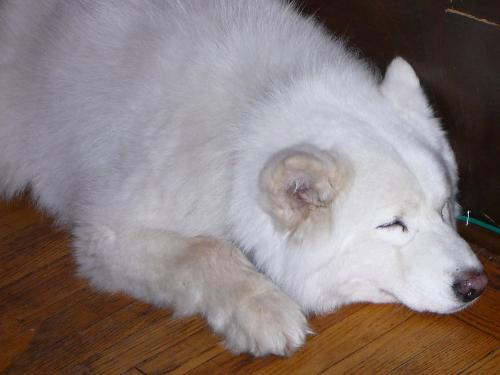

Velasquez Family News
©2007 Velasquez Family Coffee


September 2009 Coffee News
-Harvesting Beans (for eating not brewing)
-The Politics of Beans
-Automatic Billing
-In Memory of our Dog Lobo
The situation in Honduras continues to be unresolved (we've included a few links to updates below). Meanwhile, life on the coffee farm in Rio Negro rolls along quietly. A Minnesotan serving there in the Peace Corp sent us some photos of the recent bean harvest (edible beans, not coffee beans by the way) that we've also posted below. We, however, have coffee beans (and ground coffee) to deliver next week.
Harvesting Beans (for eating not brewing)
While the coffee harvest won't begin for several months yet, folks are keeping busy harvesting edible red beans. Gabe Sidman, a Minnesota native now nearing the end of his first year in the Peace Corp, sent us photos of the bean harvest and the following description:
"First, you plant your beans, usually in an area where you´ve cut coffee plants back to regenerate that gets a lot of sun. Then, fertilize and wait 2-3 months for the bean plants to grow, mature, then dry out, for the beans to turn from green to red. Then, harvest the beans by ripping the entire plant out, and putting them in a pile. You then must whack the pods with a big ol´ stick getting the little beans to fall out of the pods. By that time, they should be dry. If they don´t dry in a couple good days of sun, they´ll resprout and the entire harvest is lost -- lots of pressure. The pole is removed after a good round of thwaking and cleaned. After thwaking, the beans are dried some more on the patio."
The Politics of Beans
The bean harvest, as innocuous as it might seem, actually has a small tie to the political situation in Honduras. Before he was ousted at the end of June, President Zelaya had given farmers throughout the country bean seed to grow. Small red beans are eaten at breakfast, lunch and dinner (along with corn tortillas) by most Hondurans and thus the governments seed distribution program was an important contribution to improving the quality of life for the predominantly rural and impoverished population.
If you are curious about the latest news in the Honduran political crisis, here is a link to a Washington Post article from today entitled, "US May Not Recognize Results of Honduran Vote." Al Giordano of the Narcosphere also continues to write at length about the people's movement working to topple the coup including the role of teachers in the resistence, and the limits to upcoming elections.
Automatic Billing
Thanks to all of you who have already signed up for our automatic billing option. If you haven't, but you are interested in this convenience, you can sign up easily on the invoice you'll get with your coffee.
In Memory
Finally, a few words in memory of our dog Lobo who died 3 weeks ago. He was already an old dog when we got him from the Humane Society 2 1/2 years ago, but his death still came as a sad surprise. A big white fluffy Samoyed mix, he looked like a white wolf (thus his name), but his personality was closer to that of a teddy bear. We'll miss his peaceful presence in our home. Here are a few photos to remember him by.
